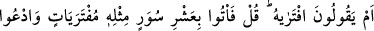
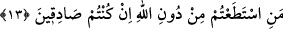

Kulun Vekil isminden nasîbi, sadece Allah’a güvenip O’na dayanması ve sadece
O’nun yardımını istemesidir.
13. Yoksa “Onu kendisi uydurdu” mu diyorlar? De ki: “Öyleyse siz de onun gibi
uydurulmuş on sûre getirin; eğer doğru iseniz Allah’tan başka çağırabildiklerinizi
de çağırın.”
“Yoksa “Onu” Kur’an’ı “kendisi uydurdu” mu diyorlar?” Yâni Kur’an Allah
tarafından olmadığı halde onu uydurdu mu diyorlar?
Bu ifâdede kınama, kötü görme ve şaşma mânâsı vardır. Kınama mânâsına gelince; bu
ifade ile sanki şöyle denilmiş oluyor: “Kur’an gibi bir kitabın uydurma olduğunu, sonra
da en büyük ve en çirkin bir iftira olan Muhammed (s.a.)’in bunu yapabildiğini
söyleyerek kendilerini mi helâk ediyorlar? Madem ki O Kur’an’ı kendisi söylüyor ve
iftirâ olarak Allah isnad ediyor, eğer ki hiçbir Arab’ın yapamadığı şeyi O yapıyorsa
bunu yapabilmesi, harikulade bir durum olduğu için mucizedir. Mucize olduğuna göre de
Allah O’nu doğrulamış demektir. Her şeyi bilen hikmet sahibi biri ise yalancı birini
doğrulamaz. O da müfteri olmuş olamaz.
“De ki: “Öyleyse” durum sizin dediğiniz gibiyse “siz de” belağat ve nazmının
güzelliği bakımından “onun gibi uydurulmuş on sûre getirin.” Burada on, Yunus
(10/38) ve Bakara (2/23) sûrelerinde ise bir sûre getirmeleri istenmiştir. Çünkü bu sûre
(Hûd), diğer iki sureden önce nâzil olmuştur. Müşriklere önce on sûre uydurmaları
konusunda meydan okundu. Bundan âciz kalınca da tek bir sûre getirmeleri konusunda
meydan okundu.
“Onun gibi” ifadesi, sûrelerin sıfatıdır. Müfti Sa‘dî’nin belirttiğine göre “on sûre”
ile “benzeri on sûre miktarı” kastedilmiştir. En iyisini Allah bilir.
“Uydurulmuş” kelimesi sûrelerin bir diğer sıfatıdır. “Şayet Kur’an’ı benim
uydurduğum doğru ise siz de belâğat bakımından ona benzeyen on uydurulmuş sûreyi
kendiniz uydurun. Çünkü siz de benim yapabildiğimi yapabilen, benim gibi fasih
konuşan kimselersiniz. Hatta bazı kıssaları ve şiirleri bildiğinizden, nesre de nazma da
yatkın olduğunuzdan bu konuda benden daha muktedirsiniz.
Âyette Allah Teâlâ’ya zâtı hasebiyle kimse benzemediği gibi kelam sıfatı, yâni Kur’an
konusunda da kimsenin benzemediğine kesin bir delâlet vardır.
“Eğer” Kur’an’ı benim uydurduğum konusunda “doğru iseniz Allah’tan başka” yani
siz Allah Teâlâ’yı dikkate almadığınız halde “çağırabildiklerinizi de” yardım
alabildiklerinizi, imdadınıza yetişeceklerini sandığınız tanrılarınızı ve şiddetli sıkıntı
durumlarında sizi rahatlatsın diye görüşlerine sığındığınız önder ve efendilerinizi, bu